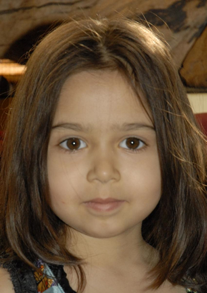

The daily photo turns 1800!Ellora's life in 3 minutes,
at almost 10 days/second |
||
|
day 1800  |
Ellora Daily Photo on YouTube |
first 1800 days |
|
News 2012: Dorkbot
presentation!
2009: IMAGO
Spanish journal!
Dec. 16, 2008: Aired on Slate
with appearance in Slate magazine article!
July 25, 2008: Aired on Germany's DW-TV!
Oct.14, 2007: Aired on Japan's NHK!
April 15, 2007:
L.A. Times article!
|
This time-lapse animation is made from the first 1800 photographs of the Ellora Daily Project. The faces were aligned by manually clicking 14,400 times on the images, then registering the eyes across neighboring images using custom software. The project is still underway...
|